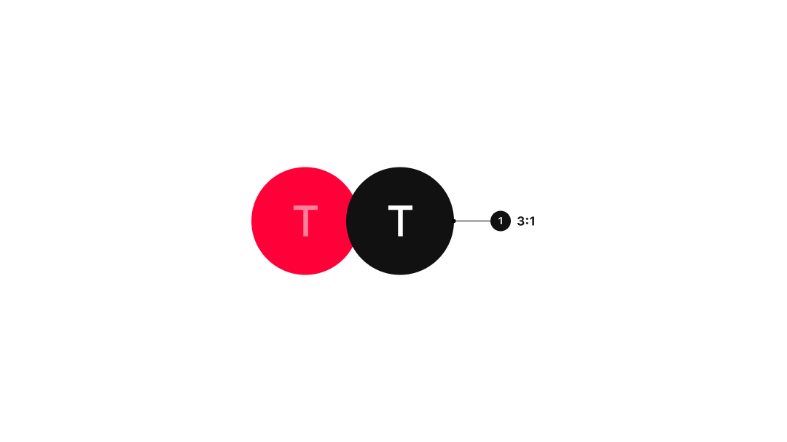

배경 — 11번가는 디자인 시스템 웹사이트를 통해 '고객 최우선' 원칙을 공개했어요. 2016년부터 내부 운영해 온 시스템을 바탕으로, 더 나은 쇼핑 환경을 만들기 위한 기준을 한곳에 정리했어요. 웹 접근성 지침을 준수해 저시력·노안 사용자도 편리하게 이용할 수 있도록 설계했고, 주요 버튼의 명도 대비를 확보했어요. A/B 테스트를 통해 홈·검색·결제 화면을 지속 개선하며 가독성·탐색 편의성·여백 설계를 고도화하고 있어요.

Philosophy — "11STREET Base on Universal"을 핵심 철학으로 Universal·Intuitive·Customer·Data·Interaction 가치를 정의했어요. 디자이너·개발자·기획자가 공유하는 공통 언어로, 브랜드 전반의 일관된 경험을 목표로 해요. 로고는 Street Sign 콘셉트로 설계됐고, 부드러운 애니메이션이 특징이에요. 국문 '11번가', 영문 '11STREET' 표기를 원칙으로 하며 변형은 금지해요.

Brand Foundation — Brand 영역은 Principle, Logo, Font로 구성돼요. 11STREET Gothic은 3가지 굵기로 가격 등 특정 영역에 사용돼요. Foundation에서는 Color, Grid, Spacing, Typography, Accessibility 등을 정의해요. 8pt 기반 간격, 4단 구조 그리드, 24pt 아이콘 가이드, 기본 본문 14pt(모바일은 +1pt) 기준을 적용해 일관성을 유지해요.
Components — Accordion, Button, Chip, Navigation, Tab 등 핵심 UI 요소를 체계적으로 안내해요. Button은 4가지 타입과 상태(Normal·Pressed·Disabled)를 정의해요. 각 컴포넌트는 기능·상태·간격 규칙을 표로 정리하고, 상황별 적용 가이드를 제공해 플랫폼 구축과 개선에 참고할 수 있도록 구성돼 있어요.